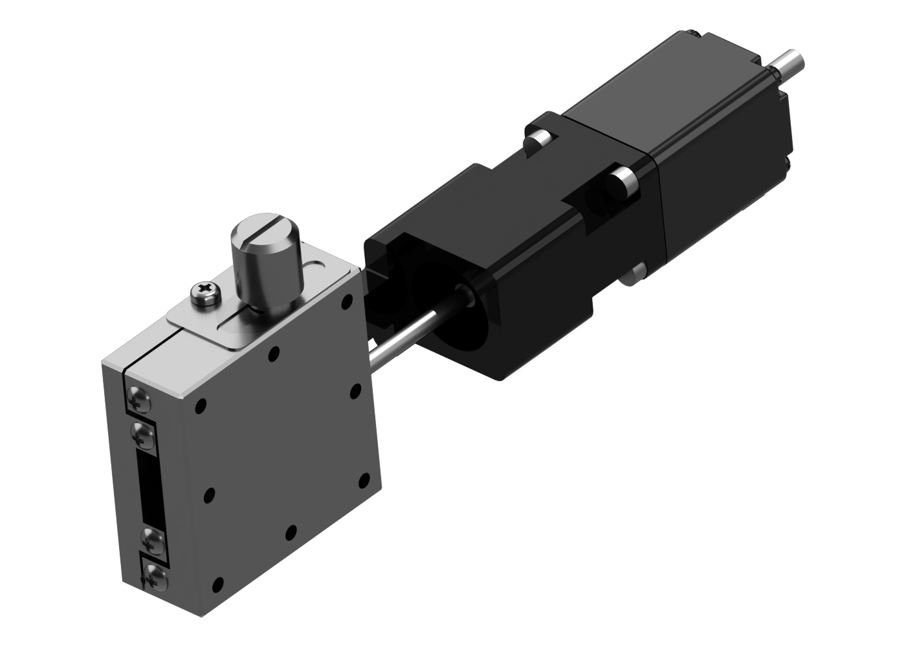
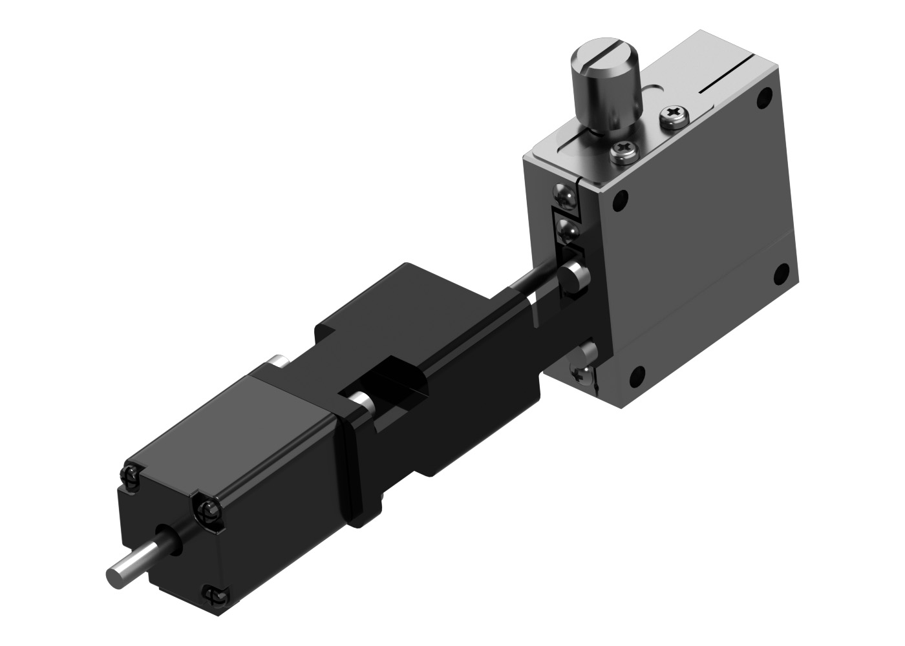
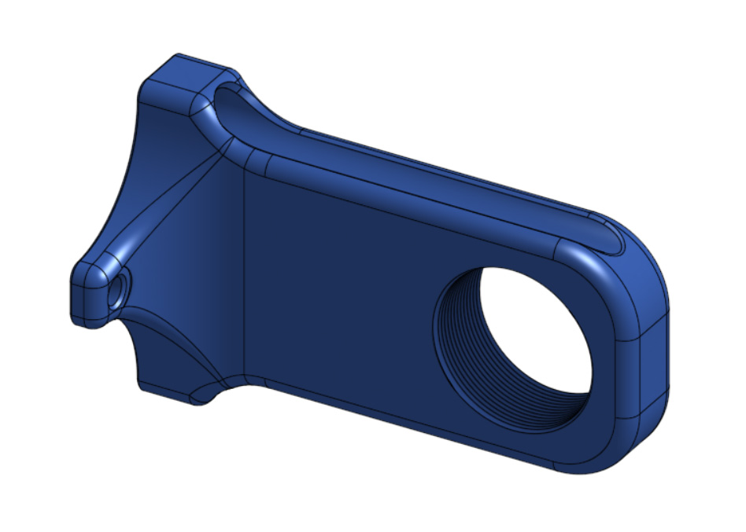
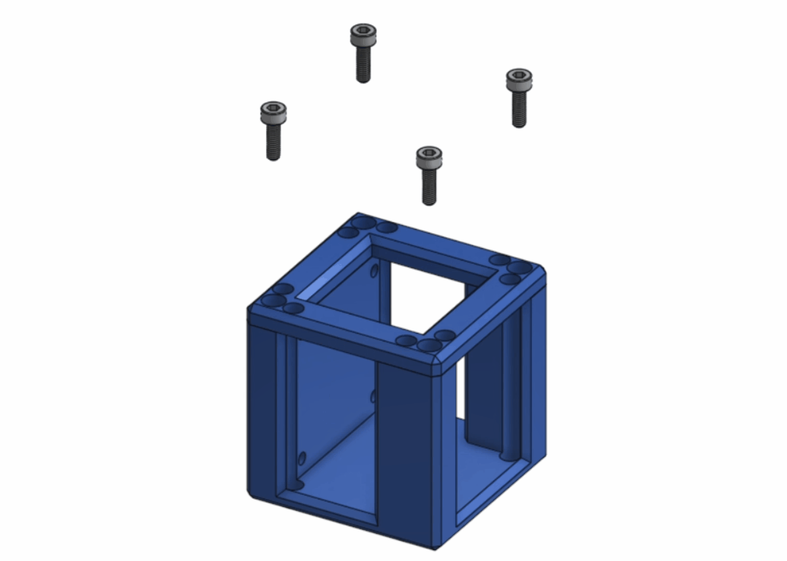
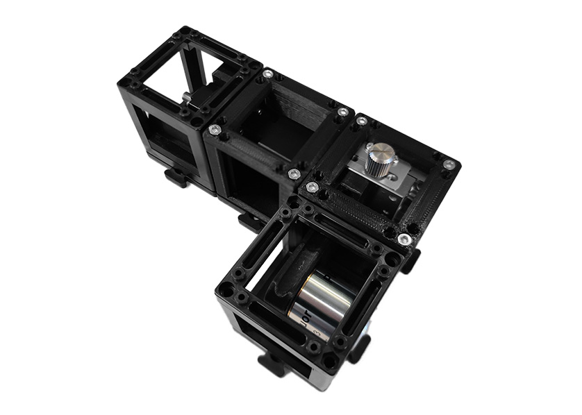

Stepper Motor Container: Y axis control
Tools
Electronic Components
Mechanical Components
Optical Components
Printed Parts

Assembly

Step 1: Base Structure:
- As shown in the GIF, join 2 New Axis Cubes, leaving its walls to the back, then add 2 UC2 cubes, generating an inverted "L" shaped structure.
Step 2: Place the guide and the motor:
- Place the Inner Motor Holder into the UC2 cube of the left.
Step 3: Stepper motor assembly:
- Join the Stepper Motor with the LBX40-21H4U adapter using 4 M2.5 x 5mm screws and tight with the allen key.

- Take the assembled pieces and join the opposite side of the LBX40-21H4U adapter with the Axis Control, using 2 M2.5 x 5mm screws

Step 4: Place the Stepper Axis Controller:
- Using the Allen key and 4 M3 x 12mm screw screw the Axis Control into the wall of the axis cube on the edge.
Step 5: Objective arm:
- Using 3 M3 x 10mm screw place the Objective arm with the Allen key, leave the middle screw pointing to the stepper motor.

Step 6: Close the cubes:

- Using the 2 axis cube tops close the new axis cubes. For that take 4 M3 x 10mm screw and tight them with the Allen key, then do the same with the 2 UC2 cubes.
Step 7: The Objective:
Screw the desired objective in the Objective arm
